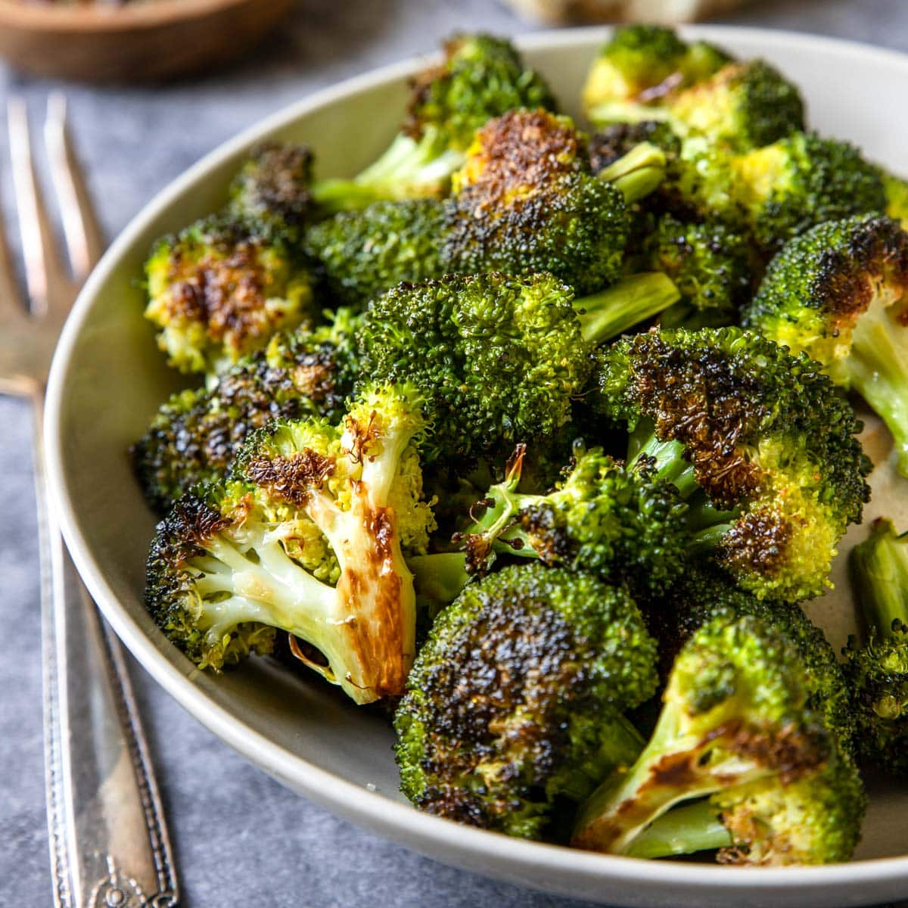

Roasted Broccoli

This Roasted Broccoli recipe is super easy, healthy, and delicious!
If you have an Air Fryer it will turn out even more crispy, but a regular oven will work fine as well
Ingredients
- 3 Broccoli crowns, stems trimmed, and cut into equal size florets
- 2 Tablespoons Olive Oil
- Salt
- Pepper
- Garlic Powder
- Cayenne Pepper
Instructions
- Toss broccoli florets in olive oil until evenly coated
- Prehead oven or air fryer to 190 degrees celsius
- Season liberally with salt, pepper, garlic pepper, and cayenne pepper
- Place in oven or air fryer for 5 minutes
- Remove and toss to promote even cooking
- Cook for another 4-5 minutes or until desired level of crsipiness is reached
Home